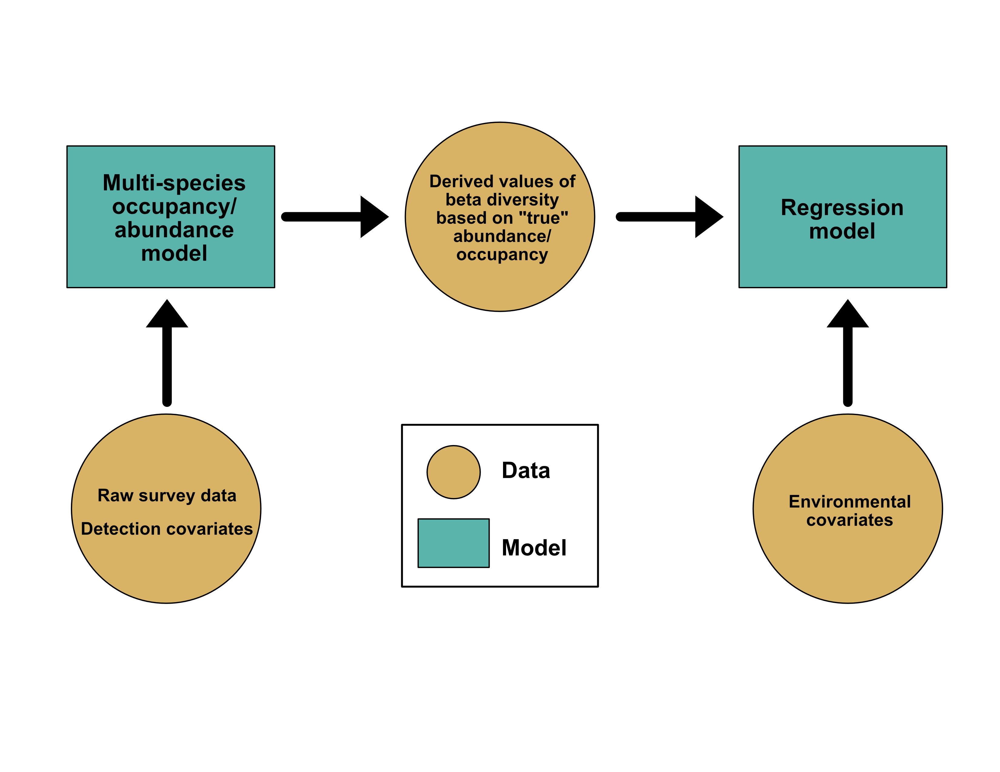
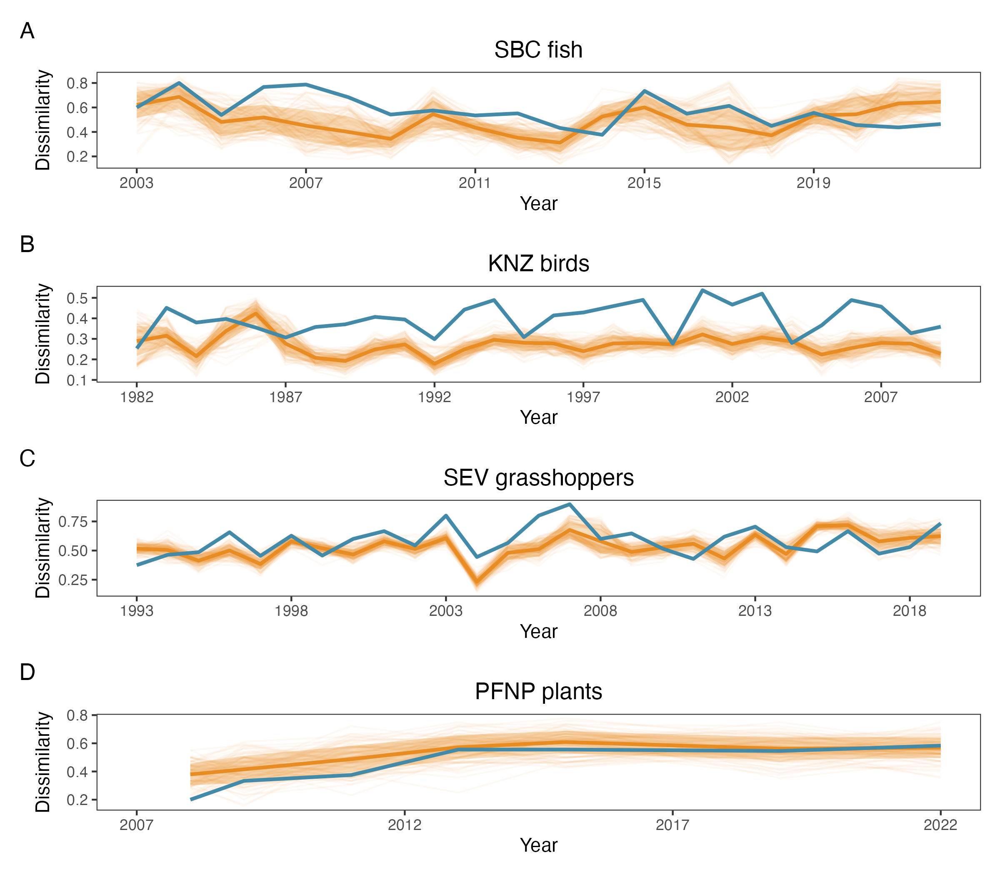
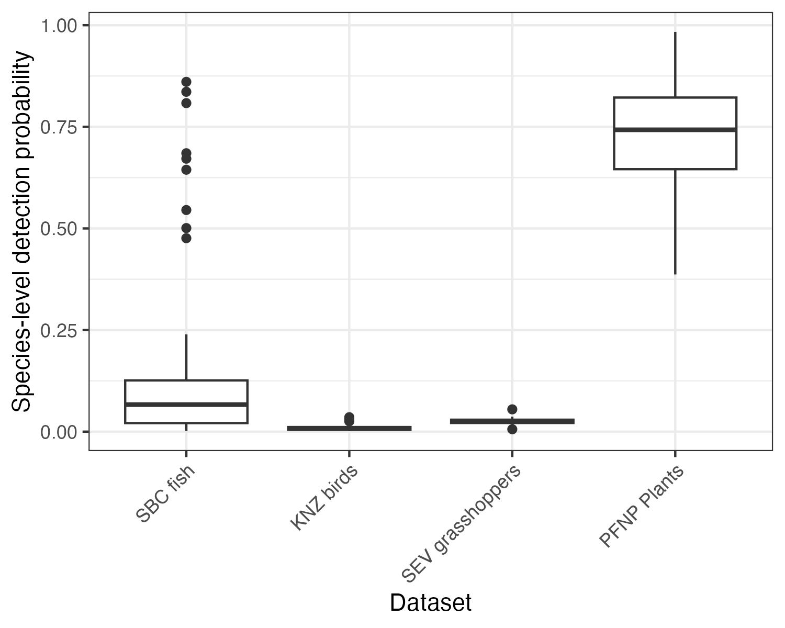

Collaborator Update November 2023
Long-term community stability: accounting for detection error to understand the contributions of current and past environmental conditions to community states
Motivation
In this study, we’re interested in understanding how long-term datasets can help us understand how communities respond to environmental change. We’re also interested in accounting for detection error in this process - a practice that is well established in some sub-fields of ecology (e.g., wildlife ecology, mostly birds) but less so in others (e.g., community ecology, especially with non-bird focus). Our aim is to combine a two-part modeling process to first account for detection error in community datasets, and then use these datasets to derive standard values of community change/stability (e.g. dissimilarlity) that can then be used in a second model in which we ask how the environment (both current and past) shapes community change.
Guiding questions
Q1: How are estimates of community stability shaped by detection error?
Q2: How is community stability through time shaped by environmental factors?
Approach
In our two-part modeling framework, we are first inputting raw survey data from a community along with covariates to detection into a multi-species occupancy or abuandance model. Then, we are deriving mean values of community change (‘beta diversity’) along with uncertainty in these values (standard deviation). Finally, we are inputting these values into a regression model that incorporates current and lagged effects of environmental covariates via the stochastic antecedent modeling (SAM) framework to understand how the environment (both biotic and abiotic) shapes community change/stability.

Datasets
Our aim is to demonstrate the general utility of the modeling process as a way to unify community ecology sub-disciplines that have historical differences in how they analyze data. Thus, we have compiled a set of four datasets across taxonomic groups and environments to highlight the general utility of our approach.
Santa Barbara Channel LTER fish community
Our first dataset is from surveys of fish in the Santa Barbara Channel LTER (SBC LTER) that span from 2000-2022.
- Taxa: Fish
- Environment: Marine - Kelp forest
- Years: 23
- Number of sites: 43
- Number of species: 63
- Data Type: Abundance
- Detection covariates: fish size and dive visibility
- Environmental covariates: seasonal temperature and annual giant kelp biomass
Konza Prairie LTER bird community
The second dataset is from surveys of grassland birds in the Konza Prairie LTER (KNZ LTER) that span from 1981-2009.
- Taxa: Birds
- Environment: Terrestrial - Tallgrass prairie
- Years: 28
- Number of sites: 3-11 (still WIP)
- Number of species: TBD
- Data Type: Abundance
- Detection covariates: bird size and survey length
- Environmental covariates: seasonal temperature, precipitation, (and potentially annual plant biomass)
Sevilleta LTER grasshopper community
The third dataset is from surveys of grasshoppers in the Sevilleta LTER (SEV LTER) that span from 1992-2019.
- Taxa: Insects
- Environment: Terrestrial - Blue gramma grassland and Creosote shrubland
- Years: 27
- Number of sites: 60
- Number of species: 46
- Data Type: Abundance
- Detection covariates: none (none provided in metadata, others not easy to derive (e.g. body size) from literature review)
- Environmental covariates: seasonal temperature and plant biomass
Petrified Forest National Park plant community
The final dataset is a set of surveys of understory plant communities in Petrified Forest National Park (PFNP) that span from 2007-2022.
- Taxa: Plants
- Environment: Terrestrial - Grassland and shrubland
- Years: 15
- Number of sites: 10 (subset because of computation time)
- Number of species: TBD
- Data Type: Presence-Absence (Detection/Nondetection)
- Detection covariates: cover class
- Environmental covariates: seasonal precipitation and VPD
Progress so far
SBC LTER fish dataset
- Detection model: complete
- SAM regression model: complete
KNZ LTER bird dataset
- Detection model: WIP
- SAM regression model: not run
SEV LTER grasshopper dataset
- Detection model: complete
- SAM regression model: complete
PFNP plant dataset
- Detection model: WIP
- SAM regression model: not run
Potential figures and follow-up analyses
Following are a set of potential figures we could consider including the paper (or supplements) along with follow-up analyses associated with these.
Q1: Detection error
Covariates driving detection
When thinking about detection, we could look at how covariates we input into the model influence our ability to detect species:

Accounting for detection error change and estimates of change
We could also look at how observed versus modeled estimates of dissimilarity compare:

In this case, we could perform a post-hoc analysis of whether estimates of dissimilarity change with data type (observed versus modeled) and whether this varies by dataset. This could be a quick frequentist model (glmm with random effects of site-year as a “repeated measures” and covariates of data type, dataset ID, and their interaction) or could be a follow-up Bayesian model.
Temporal trends in change with and without detection error
We might also illustrate how variable the two types of data (observed versus modeled) are over time, using a few sites as illustration:

Qualitative assessment of detection probabilities
Depending on whether datasets greatly vary in their observed versus modeled estimates, we could do an qualitative assessment of whether this is related to relative “rarity” in the dataset, based on the distribution of detection probabilities for each species in the dataset:

Q2: Environmental drivers
For regression models, we could illustrate the effects of all covariates in the model: all model estimates plot
As well as demonstrate how important variables shape community change as well as whether these effects are relatively instantaneous or lagged: sam partial plots
Figure feedback
We are limited to 6 figures and tables in the paper, and many of these figures could be multi-panel to highlight all four datasets. Do you all have thoughts on your favorite ways to visualize the datasets, given our goals in this paper?